公园
PARK DESIGN
查看更多

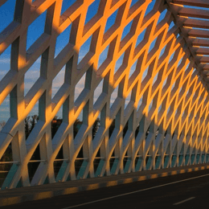
颐和园
颐和园，中国清朝时期皇家园林，前身为清漪园，坐落在北京西郊，距城区15公里，占地约290公顷（2.9平方千米），与圆明园毗邻。它是以昆明湖、万寿山为基址，以杭州西湖为蓝本，汲取江南园林的设计手法而建成的一座大型山水园林，也是保存最完整的一座皇家行宫御苑，被誉为“皇家园林博物馆”，也是国家重点旅游景点。
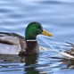


颐和园
北京
+12
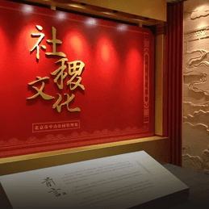
中山公园
中山公园位于北京市中心紫禁城（故宫）南面，天安门西侧，与故宫一墙之隔。占地23万平方米，是—座纪念性的古典坛庙园林。 它原是明清两代的社稷坛，与太庙（今劳动人民文化宫）一起沿袭周代以来“左祖右社”的礼制建造。
 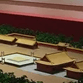
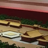

中山公园
北京
+12
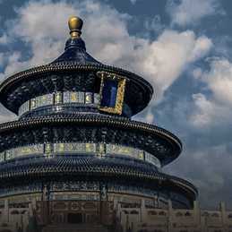
天坛公园
天坛，世界文化遗产，全国重点文物保护单位。
北京市文化局为天坛公园颁发“天坛神乐署中和韶乐”北京市级非物质文化遗产标牌。
北京市文化局为天坛公园颁发“天坛神乐署中和韶乐”北京市级非物质文化遗产标牌。
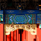
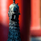

天坛公园
北京
+12
香山公园
香山公园，位于北京市海淀区买卖街40号，北京市区西北郊，占地188公顷，是一座具有山林特色的皇家园林。景区内主峰香炉峰俗称“鬼见愁”，海拔575米。早在元、明、清时，皇家就在香山营建离宫别院，每逢夏秋时节皇帝都要到此狩猎纳凉。咸丰十年（1860年）和光绪二十六年（1900年）先后两次被英法联军、八国联军焚毁，1956年开辟为人民公园。
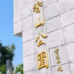


香山公园
北京
+12
文博机构
CULTURAL INSTITUTIONS
查看更多
北京建筑
BEIJING ARCHITECTURE
查看更多
学校文化
SCHOOL CULTURE
查看更多
北京大学
北京大学创立于1898年维新变法之际，初名京师大学堂，是中国近现代第一所国立综合性大学，创办之初也是国家最高教育行政机关。1912年改为国立北京大学。
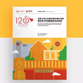
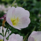

北京大学
北京
+12
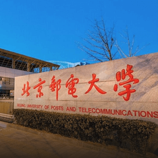
北京邮电大学
北京邮电大学创建于1955年，原名北京邮电学院，是中华人民共和国第一所邮电高等学府，隶属原邮电部。 1960年，被国务院确定为全国重点高校。1993年，更名为“北京邮电大学”。
 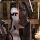
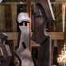

北京邮电大学
北京
+12
北京交通大学
学校是交通大学的三个源头之一，历史渊源可追溯到1896年，前身是清政府创办的北京铁路管理传习所，是中国第一所专门培养管理人才的高等学校，是中国近代铁路管理、电信教育的发祥地。
 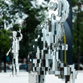
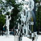
北京交通大学
北京
+12
公共主页
微信订阅号
微信服务号

新浪微博
官方网站
主办单位
中华人民共和国文化和旅游部
北京市人民政府
承办单位
北京歌华文化发展集团有限公司
北京工业设计促进中心
北京国际设计周组委会办公室
地址：北京市东城区青龙胡同1号歌华大厦A座14层
邮编：100007
电话：010 8418 6060
传真：010 8418 6001
邮箱：info@bjdw.org
© 北京国际设计周 京ICP备16034572号-1 京公网安备11010102001199号